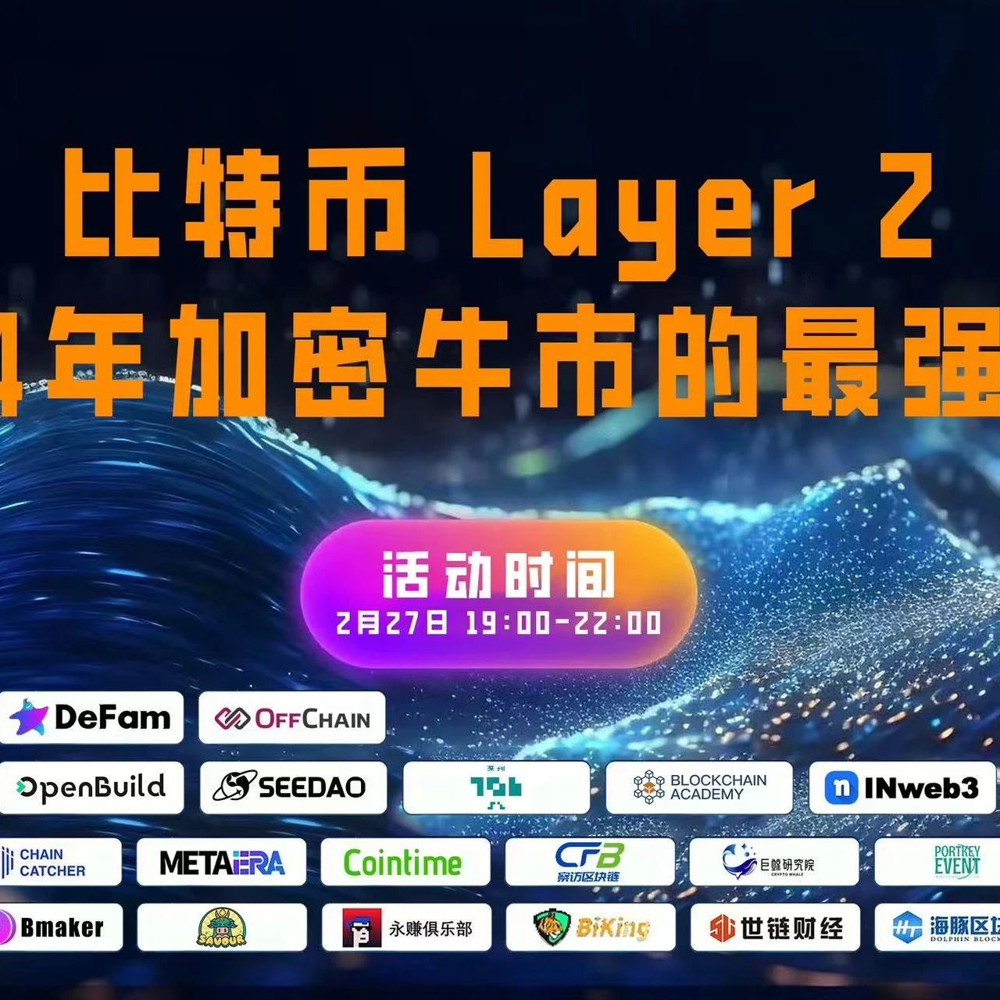

SeeDAO支持 | 聚焦 BTC Layer2 生态，龙年第一场 Web3 活动将在27日与你相约深圳
作者: DeFam
BTC Layer2，2024 加密牛市的最强叙事。

比特币的强劲上涨势头，以及去年备受关注的比特币铭文和 Layer2 技术话题，再次引起了市场对比特币生态系统发展的关注。其中，近期最受市场和社群讨论的焦点无疑是"比特币L2解决方案"。公链纷纷布局 BTC Layer2，它被视为下一个价值洼地，成为社区关注的焦点。2月27日，由 ICP Hub HK 主办，DeFam 和 OFFChain 联办的龙年第一场 Web3 活动在深圳线下举办，本次活动将聚焦"比特币 Layer2 解决方案"，深入了解 BTC Layer2 的发展最前沿等。期待能够与更多加密爱好者、从业者一起交流 BTC 技术的前沿发展和机会，抓住 2024 加密牛市的“财富密码”！🕒 18:30 — 19:00 签到主持
🕒 19:00 — 19:10 开场白
🕒 19:10 — 19:40 嘉宾主题分享一
🕒 19:40 — 20:10 嘉宾主题分享二
🕒 20:10 — 20:30 嘉宾主题分享三
🕒 20:30 — 21:00 嘉宾主题分享四
🕒 21:00 — 21:30 圆桌讨论：比特币Layer2生态有哪些机遇？
🕒 21:30 — 22:30 自由交流 🍰🍺💃
🗓日期: 2024年02月27日 19:00pm - 22:30pm浏览器端打开
🔗 https://openbuild.xyz/learn/challenges/2028465048扫码加入 BTC 活动福利群👇
入群活动咨询&商务对接可添加小助手vx：hk549526982